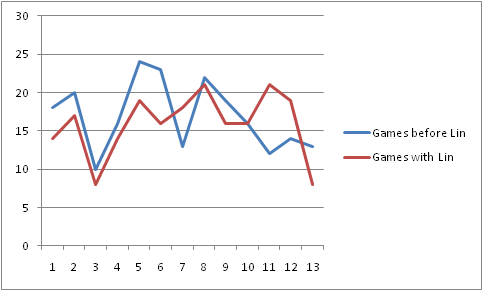

Contrary to recent hype, Jeremy Lin does not have a turnover problem. A clear and concise way to demonstrate this is to make a graph with each game's turnovers for the 13 games before Lin started playing major minutes and the 13 games since.
It looks like the team turnovers have stayed pretty much the same, doesn't it?
In fact, the team has turned the ball over somewhat fewer times since Jeremy Lin took over.
| 13 games before Lin | 13 games with Lin |
|---|---|
| 220 | 207 |
We can also average out the number of turnovers for the entire season pre- and post-Lin.
| Before Lin | With Lin |
|---|---|
| 15.91 | 15.92 |
Can't just say "he has a turnover problem".
He initiates a ton of offense. What if he had 10 TOs but they were all the Knicks TOs every game? Would that be a problem? Several other analysts have made this same point.
Now, it's possible that Lin accounts for a lot of the team's turnovers, but is more turnover prone than his teammates also. In fact, even with his high usage, he has a high turnover rate for a guard. But, keep in mind that him making a play is still preferable to most of his teammates making a play due to non-PG even higher TO rates. And second, if you've watched him play, you see that he reduces the likelihood of teammates turning it over by putting them into position to make an immedite score easy move. Less one on one play by non-PGs equals fewer TOs. There's especially no excuse among Knick fans for not recognizing this when they complain repeatedly about Amare and Carmelo driving into the teeth of the defense and making horrible plays. Also, it should be clear that there continues to be difficult to nail down effects from PG play. Why is it that Rubio has such a terrible PER, but people still think he's hugely responsible for Minnesota's resurgence this year. The fact is, a PG can encourage good floor spacing and crisp passing which reduces TOs for the team as a whole. Anyone who's watched the Knicks since Lin took over can see immediately that there's a dramatic and bad difference in the offense when Lin comes out. Baron Davis may be ameliorating that soon, indications at the end of last game were good.
People who should know better aren't using their words
If Steve Nash were compared to Sebastian Telfair, would you say he had a turnover problem?
How about the eye test? Lin just looks lackadaisical. Well, no, when Nash played the Clippers, he lost the ball in several embarrassing ways.
How about the "can't go left". First of all, he CAN go left. This is one of the silliest conceits in basketball analysis. He can go left enough to keep them honest, which is the standard used in many other sports analogies. Notice how he smoked Kyrie Irving at the end of the Cleveland game.
Why the focus on Lin's TOs? Some honest innumeracy, some sensationalism, some hate, some anti-hype, some feigning